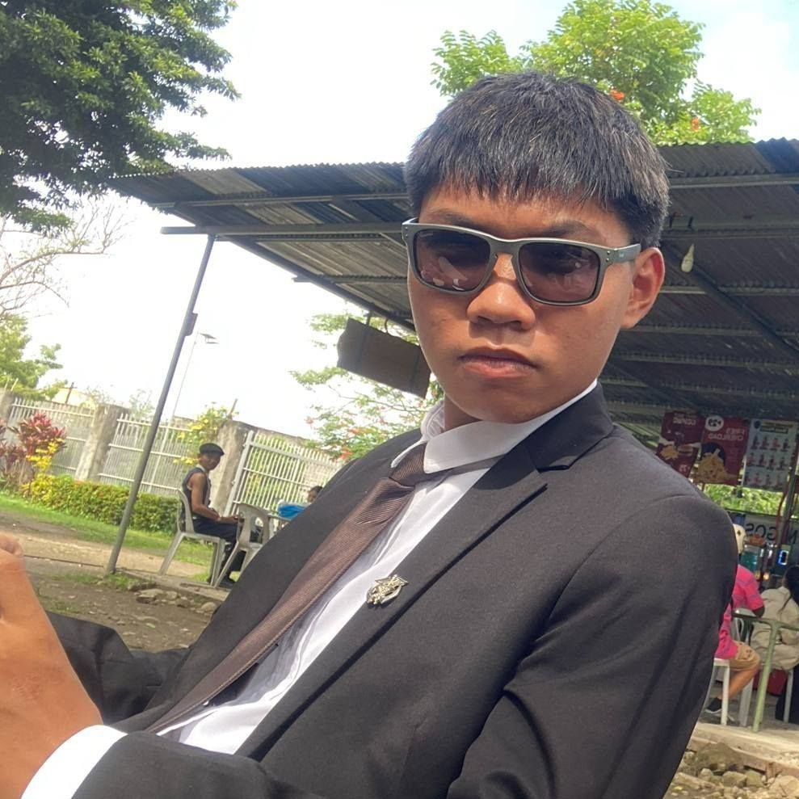

Ash Sumanoy's
Welcome to my personal portfolio! I'm a Grade 11 Computer Programming student at Asian College Dumaguete.
Growing up with an IT dad, I developed an interest in computers, phones, and browsing the internet Seeing
how everything basically runs on code, such as Desktop/Mobile Games, ATM's, Mall Cash
Registers, Machine Software, and even Calculators, I got hooked on learning about technology and
programming.
I started with the basics of C++ and Python, and I'm currently building my skills in HTML and
CSS, with this portfolio being one of the outputs that will help me develop them. Outside of school, I
self-study technology on my own time and pick things up through personal projects.
As of now, frontend
development has got me interested in the IT field. But hearing about how AI is taking over and replacing
people across various IT fields, I'm also drawn to learning how to automate with AI to be up to date with
the current times. For college, I'm looking at BSIT, BSCS, or BSCE.
Outside of technology-related
schoolwork, I'm a member of the IWAG Marching Band, playing as the trumpet at Asian College. Music is also a
big part of who I am. I
love listening to all sorts of music and learning to play every type of instrument, like brass, drums,
strings, and more. I also swim and run when I get the chance. I'm still working on writing cleaner, more
organized code, which is something this portfolio is helping me practice.
I started coding in the first quarter of Computer Programming, and I'm still in the early stages of learning. Most of what I know comes from school and personal practice, and I'm slowly building a foundation one project at a time.
I'm currently enrolled in a Computer Programming strand at Asian College, where I work with languages like C++, HTML, and CSS on a regular basis. Most of my experience comes from coursework and small personal projects.